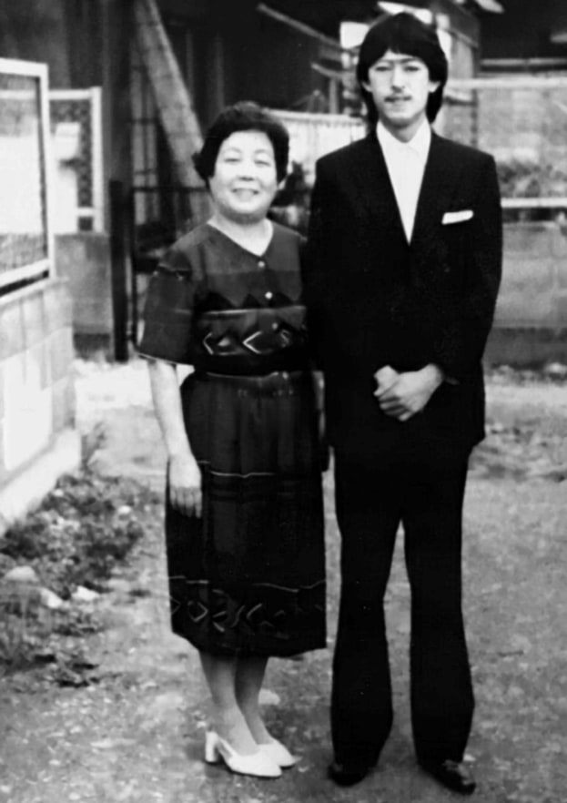
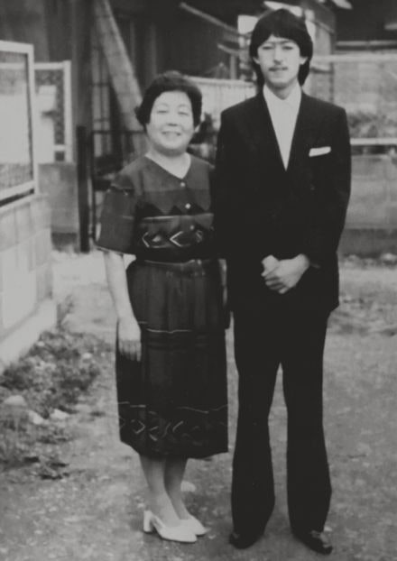
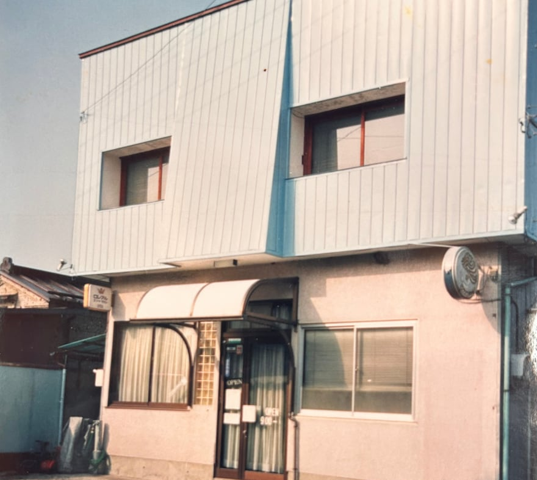
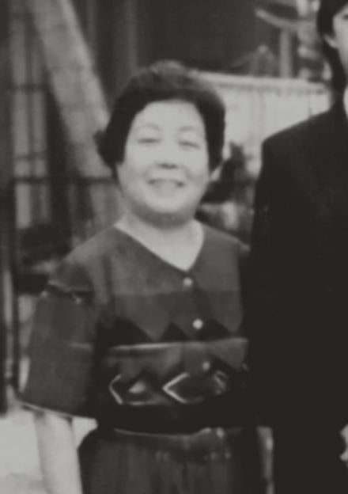
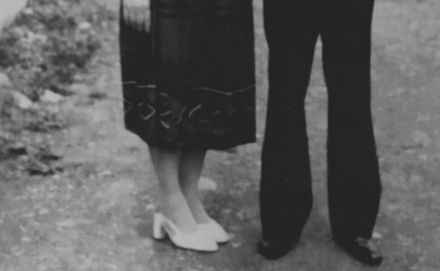

70TH ANNIVERSARY

70年分のありがとうを。
ANNIVERSARY PARTY
2026.10.31 sat
11:00-16:00
Message
70年分の
ありがとうを。
1956年の創業から、今年の12月で70年を迎えます。祖母が創業し、父が受け継ぎ、現在に至ります。そして、そのバトンを私たち姉弟で受け継いでいきます。
当時、女手１つで子供3人を育てながら店を立ち上げた祖母のヴァイタリティーには、改めて尊敬の念を抱かざるを得ません。すごいねおばーちゃん。よくやったねおばーちゃん。
そして、祖母から受け継いだ父は、時代をキャッチするアンテナの高さ、変化への適応力があったからこそ、ここまで歩んでこられたのだと感じています。
私たちも、その想いや歴史を受け継ぎ、美容師としての進化はもちろん、地域に還元していけるよう私たちなりの歩みを進めてまいります。これからも変わらず応援していただけると嬉しいです。
何よりここまで歩んでこられたのは、通い続けてくださったお客様、今までLABOを支えてくれたスタッフ、そしてこの街のあたたかさがあったからにほかになりません。心からの感謝を込めて、まずはお礼をお伝えさせてください。本当に、ありがとうございます。
この節目の年に、日頃の感謝を形にするため、少し早いですが2026年10月31日（土）、当店にて70周年感謝祭を開催いたします。音楽と、おいしい食べものと、LABOの70年をたどる小さな写真展。肩ひじ張らない、お祭りのような一日をスタッフ一同で準備しています。どうぞお気軽に遊びにいらしてください。
皆さまとお会いできることを、心より楽しみにしております。
Staff
STAFF仮
70年を支えてきたのは、家族だけではありません。いま店に立つ5人から、ひとことずつ。
スタッフ 1
スタッフ名
Staff
※ここに自由文が入ります。80〜120文字程度を想定。5人それぞれが好きなことを書く形です。文字数の目安だけ揃えると、並べたときの見た目が整います。
スタッフ 2
スタッフ名
Staff
※ここに自由文が入ります。写真は5人とも同じ場所・同じ光・同じ距離で撮ると、デュオトーン処理をかけたときに揃います。
スタッフ 3
スタッフ名
Staff
※ここに自由文が入ります。写真とテキストは左右交互に配置されるため、人数が増減しても崩れません。
スタッフ 4
スタッフ名
Staff
※ここに自由文が入ります。1人分をまるごとコピーして貼り付ければ増やせる構造にしています。
スタッフ 5
スタッフ名
Staff
※ここに自由文が入ります。肩書きは全員「Staff」で統一しています。70年を支えたことに、役割の違いは関係ありません。
History
1956—2026仮
写真はすべて同じ青のトーンに揃えてあります。けれど鏡をかざすと、その中だけ当時の色が戻る。
スクロールすると、70年が右から左へ流れます。
1956

祖母が創業。女手ひとつで子供3人を育てながら、この街に店を構える。
1960s仮
WANTED
※年表データ待ち
旧店舗仮

上町の旧店舗。鏡をかざすと、当時の色のまま現れます。
1970s仮

※撮影年不明
1980s仮
父が受け継ぐ。時代をキャッチするアンテナの高さと、変化への適応力。
1990s仮
WANTED
※年表データ待ち
2000s仮

※年表データ待ち
2010s仮
WANTED
※年表データ待ち
2026.10.31
空けておきます
姉弟がバトンを受け継ぐ。感謝祭が終わったら、この日の写真をここに入れる。告知サイトが、記録サイトに変わります。
Event Information
2026.10.31
SAT
11:00 — 16:00
- Place
- 美容室LABO 店舗前・店内
栃木県矢板市上町15-29 - Fee
- 無料
- Booking
- 不要
70周年感謝祭まで、あと
Countdown to 2026.10.31 11:00
70周年感謝祭は終了しました。
ご来場いただき、ありがとうございました。
参加費無料・予約不要。
どなたでもご参加いただけます。
※お客様に向けた感謝祭のため、当店をご利用いただいたことのない方は、混雑時に入場を制限させていただく場合がございます。あらかじめご了承ください。
Contents
当日の内容
01
Food & Drink
店前がマルシェになります。おいしいお食事とともにお楽しみください。
ビール・ハイボール・ソフトドリンクもご用意しています。
店頭でお配りしているチラシをご持参の方は、ドリンク1杯無料になります。
02
DJ
四十万さん（@naoto_shijima_shijima_ru）による選曲。70年の歴史をたどるような音楽で、一日を通して会場を包みます。
03
写真展
旧店舗の写真など、これまでの当店の歴史をパネルと映像で辿る、小さな写真展を店内で開催します。
04
抽選会
感謝を込めて、ハズレなしの抽選会を行います。時間は決めていません。開催中いつでもご参加いただけます。
05
Original Goods
先着100名様に、70周年オリジナルグッズをプレゼント。お早めにご来場ください。Tシャツ・トートバッグ・靴下など、当日限定のグッズも販売いたします。
Access
ACCESS
美容室LABO
栃木県矢板市上町15-29
駐車場のご案内
- 店舗近くの空き地をご利用ください。
- 混雑時は、徒歩3分圏内にある矢板中学校の駐車場を臨時駐車場としてご利用いただけます。
- 路上駐車は近隣住民の皆様のご迷惑となりますので、ご遠慮ください。